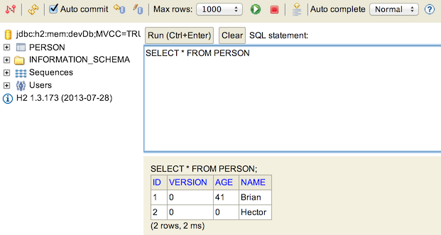

(whocares)
fire up the engines
$ grails -version
Grails version: 2.3.8
CLI and create app demo
Try it out
$ grails help
$ grails create-app grailsdemo
$ cd grailsdemo
$ grails run-app
| Server running. Browse to http://localhost:8080/grailsdemo
grails-app - Top level directory for Groovy sourcesconf - Configuration sources.controllers - Web controllers - The C in MVC.domain - The application domain - The M in MVC.i18n - Support for internationalization (i18n).migrations - Database migration.services - The service layer.taglib - Tag libraries.utils - Grails specific utilities.views - Groovy Server Pages - The V in MVC.scripts - Gant scripts.src - Supporting sourcesgroovy - Other Groovy sourcesjava - Other Java sourcestest - Unit and integration tests.web-app - JavaScript and CSS.wrapper - Wrapper.Open:
/grails-app/conf/BuildConfig.groovyChange:
grails.project.fork = [
// configure settings for compilation JVM, note that if you alter the Groovy version forked compilation is required
...
...
// configure settings for the Console UI JVM
console: [maxMemory: 768, minMemory: 64, debug: false, maxPerm: 256]
]
To:
grails.project.fork = false
/grails-app/domain/
constraints enforce database consistency
$ grails create-domain-class Person
//grails-app/domain/Person.groovy
class Person {
String name
Integer age
static constraints = {
name blank: false
age min: 0
}
}
constraints are enforced on save() and validate()
def person = new Person(age: 42, name: 'Douglas Adams')
person.validate() //only checks constraints
person.save() //saves the instance to the database
Finders are dynamically created for all properties
def everybody = Person.list()
def theOne = Person.findByNameAndAge('Brian', 41)
def caseInsensitive = Person.findAllByNameIlike('graeme')
def underAge = Person.findAllByAgeLessThan(18)
def seniors = Person.findAllByAgeGreaterThanEquals(65)
def orderedByName = Person.listOrderByName()
/test/unit/
Person also creates a PersonSpec
//test/unit/grailsdemo/PersonSpec.groovy
@TestFor(Person)
class PersonSpec extends Specification {
def setup() {
}
def cleanup() {
}
void "test something"() {
}
}
"age should be more than 0"
//test/unit/grailsdemo/PersonSpec.groovy
@TestFor(Person)
class PersonSpec extends Specification {
void "age should be more than 0"() {
when:
def person = new Person(age: age, name: 'joe')
then:
person.validate() == valid
where:
age | valid
0 | true
41 | true
-1 | false
}
}
Play with dynamic finders
/grails-app/controllers/
Scaffolded UI Demo
//grails-app/controllers/grailsdemo/PersonController.groovy
class PersonController {
static scaffold = true
}
Fire it up and give it a spin
$ grails run-appBrowse to http://localhost:8080/demo/dbconsole
http://localhost:8080/demo/person/show/1.json
{
class: "grailsdemo.Person",
id: 1,
age: 41,
name: "Brian"
}
http://localhost:8080/demo/person/show/1.xml
41
Brian
$ grails generate-controller grailsdemo.PersonOpen:
grails-app/controllers/grailsdemo/PersonController.groovy
//grails-app/controllers/grailsdemo/PersonController.groovy
@Transactional(readOnly = true)
class PersonController {
static allowedMethods = [save: "POST", update: "PUT", delete: "DELETE"]
def index(Integer max) {
params.max = Math.min(max ?: 10, 100)
respond Person.list(params), model: [personInstanceCount: Person.count()]
}
def show(Person personInstance) {
respond personInstance
}
...
...
}
Run:
$ grails test-app unit: PersonController
What happens?
Open:
/test/unit/grailsdemo/PersonControllerSpec.groovyChange:
def populateValidParams(params) {
assert params != null
// TODO: Populate valid properties like...
//params["name"] = 'someValidName'
}
To:
def populateValidParams(params) {
assert params != null
params["name"] = 'joe' //or whatever
params["age"] = 42 //or whatever
} Do we have the time?
/grails-app/views/
$ grails generate-all grailsdemo.PersonOpen:
grails-app/views/person/index.gspOpen:
grails-app/views/person/show.gspOpen:
grails-app/views/person/create.gspgrails-app/views/person/edit.gspgrails-app/views/person/_form.gsp/grails-app/services/
$ grails create-service PersonOpen:
grails-app/services/demo/PersonService.groovy
@Transactional
class PersonService {
def getAll() {
Person.list()
}
}
class PersonController {
PersonService personService //injected by grails
def index(Integer max) {
respond personService.getAll()
}
...
}
Person should have country
//grails-app/domain/Person.groovy
class Person {
String name
Integer age
String country
static constraints = {
name blank: false
age min: 0
country nullable: true
}
}
Open:
test/unit/grailsdemo/PersonSpec.groovyOpen:
grails-app/views/person/index.gspand:
grails-app/views/person/_form.gspCreating a new person should send you to the list view (index)
Open:
grails-app/controllers/grailsdemo/PersonController.groovyhttps://grails.org/plugins/